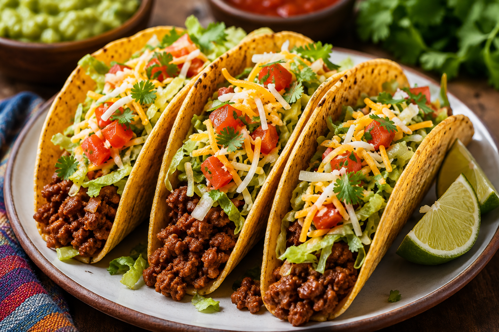

Back to Home PageTacos are a traditional Mexican dish consisting of a folded or rolled tortilla filled with various ingredients such as meat, cheese, beans, and vegetables. They are often garnished with salsa, guacamole, and fresh herbs.